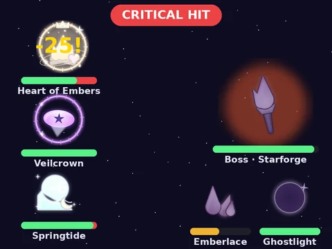

Battles · Beta
Hunts and battle teams
Unless an admin turns it off, the Dimming drifts across the sky and dulls stars until they turn on anyone who comes near. Pick up to 3 of your stars with /sky team, then run /sky hunt to face a dimmed star.
- Your team: every star has its own HP, attack, defense and speed. Brighter stars are a little stronger.
- Win and the star is rekindled: you get a little stardust and a chance it joins your sky (a copy of a star you have makes it brighter).
- Lose and nothing is lost. Your stars are fine.
- Cooldown: one hunt every 30 seconds, and hunt stardust has its own nightly cap.
Dimmed stars only come from rarities you’ve unlocked, and they’re matched to your team, so a hunt is a fair fight at any level.
Story bosses (on unless an admin turns them off): every story chapter ends with a boss the Dimming swallowed. Face it with /sky boss; win to rekindle it and open the next chapter. Losing costs nothing, and chapters you already have stay yours.
The moon keeps watch too: each phase calls one family closer (its stars show up more often). A new moon is a Dimming night: hunts are tougher and can bring a rarer star, for 1.5× stardust inside the nightly cap. A full moon makes a rekindled star a little likelier to join you, and a half moon adds a fragment to trips.
Star profiles: /sky star (or the View button on catch, collection, team and battle cards) opens any star’s page: its lore, battle stats, moves and passive, how bright yours is and when you first rekindled it. ◀ ▶ step through its family. A star you haven’t found yet shows only its silhouette and a hint, with a Set wish button.

A story boss fight: your team of up to three stars against the boss